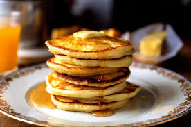

Pancake

Description
A delicious and fluffy pancake recipe that will satisfy your breakfast cravings.
Ingredients
- 1 cup all-purpose flour
- 2 tablespoons sugar
- 1 teaspoon baking powder
- 1/2 teaspoon baking soda
- 1/4 teaspoon salt
- 1 cup buttermilk
- 1 large egg
- 2 tablespoons unsalted butter, melted
Steps
- In a mixing bowl, whisk together the flour, sugar, baking powder, baking soda, and salt.
- In a separate bowl, whisk together the buttermilk, egg, and melted butter.
- Pour the wet ingredients into the dry ingredients and stir until just combined.
- Heat a lightly greased griddle or frying pan over medium heat.
- Pour 1/4 cup of batter onto the griddle for each pancake.
- Cook until bubbles form on the surface, then flip and cook until golden brown.
- Repeat with the remaining batter.
- Serve the pancakes warm with your favorite toppings.